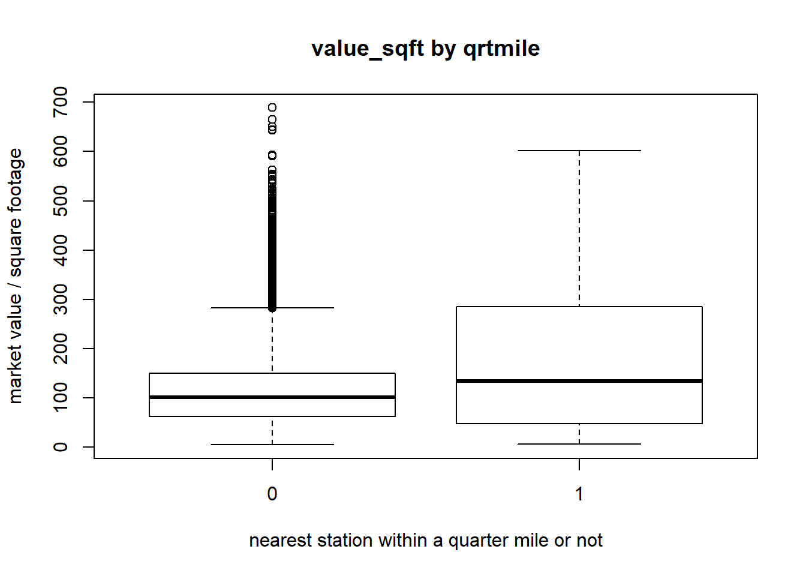
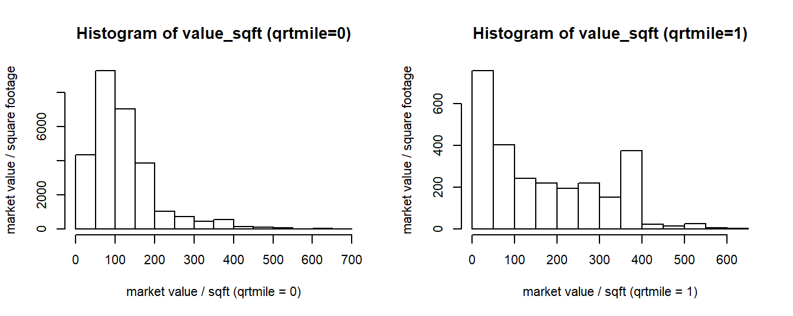
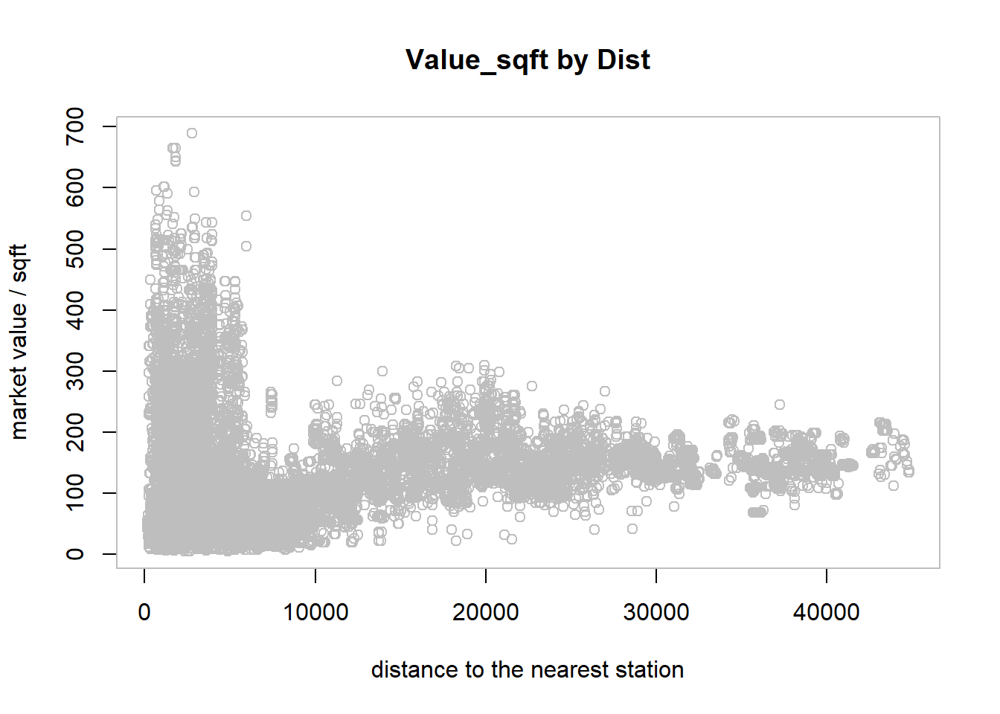
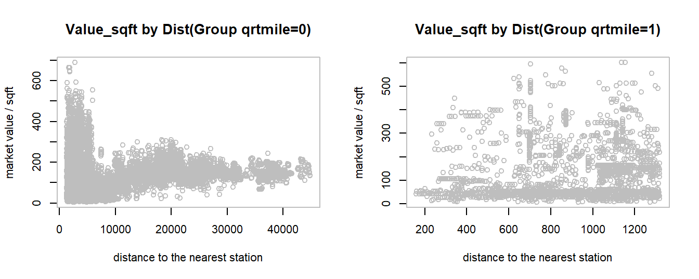
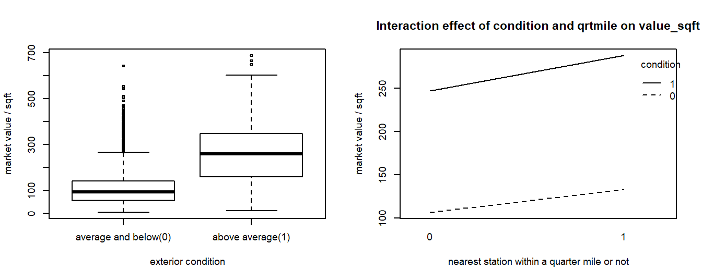
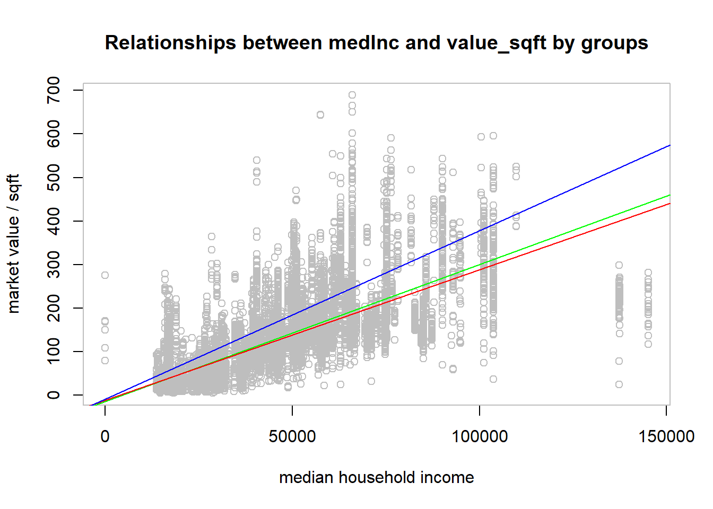
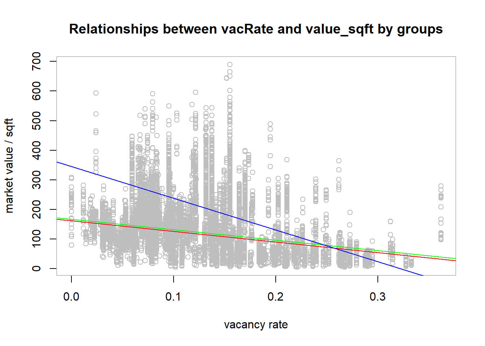
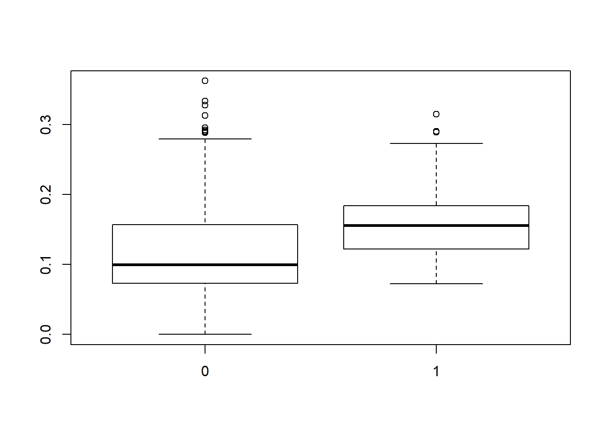

Let us explore the relationships between the response variables and explanatory variables one by one.
As mentioned before, interactions may exist between the variable qrtmile and other explanatory variables. A good way to explore these interactions is to see whether the effects of other explanatory variables on value_sqftlook different when the variable qrtmile is different.
# create a data frame for each group(qrtmile=0 and qrtmile=1) for later use
dat0<-dat[dat$qrtmile==0,]
dat1<-dat[dat$qrtmile==1,]boxplot(value_sqft~qrtmile,data=dat,ylab="market value / square footage",xlab="nearest station within a quarter mile or not",main="value_sqft by qrtmile")
var(dat0$value_sqft)## [1] 6717.297var(dat1$value_sqft)## [1] 18444.55The boxplot is not showing substantial difference between the average market values per square footage of the two groups (\(qrtmile=0\) and \(qrtmile=1\)). However, the spreads (variances) of value_sqft for these two groups are quite different.The distribution of value_sqft for properties located more than a quarter mile away from the nearest transit station (\(qrtmile=0\)) has many extreme outliers.
par(mfrow = c(1,2), cex=0.7)
hist(dat0$value_sqft,ylab="market value / square footage",xlab="market value / sqft (qrtmile = 0)",main="Histogram of value_sqft (qrtmile=0)")
hist(dat1$value_sqft,ylab="market value / square footage",xlab="market value / sqft (qrtmile = 1)",main="Histogram of value_sqft (qrtmile=1)")
?hist The histograms above also show that the distribution of value_sqft for the first group (\(qrtmile=0\)) is more right skewed.
par(col="grey")
plot(dat$dist,dat$value_sqft,xlab="distance to the nearest station",ylab="market value / sqft", main="Value_sqft by Dist")
The relationship between dist and value_sqft seems to be non-linear. value_sqft seems to decrease at first as dist goes up, and then start to increase as dist increases. Starting from \(dist=20000(feet)\), there seems to be no effect of dist on value_sqft.
par(mfrow = c(1,2),cex=0.7,col="grey")
plot(dat0$dist,dat0$value_sqft,xlab="distance to the nearest station",ylab="market value / sqft", main="Value_sqft by Dist(Group qrtmile=0)")
plot(dat1$dist,dat1$value_sqft,xlab="distance to the nearest station",ylab="market value / sqft", main="Value_sqft by Dist(Group qrtmile=1)") Comparing the plots for different groups, we can see that the patterns are quite different, if there is any. Within a quarter mile from transit stations, the market values per square footage for properties seem to be independent from dist. However, the relationship between dist and value_sqft for properties located more than a quarter mile from transit stations seems to conform the overall pattern stated previously (the two plots are quite similar). This is not surprising since the number of observations in this group account for 89% of the total.
Given this non-linear trend of value_sqft over dist, dist is probably not a appropriate variable to be included in the multiple regression model.
par(mfrow = c(1,2),cex=0.6)
boxplot(value_sqft~condition,data=dat,names=c("average and below(0)","above average(1)"),xlab="exterior condition",ylab="market value / sqft")
interaction.plot(dat$qrtmile,dat$condition,dat$value_sqft,xlab="nearest station within a quarter mile or not",ylab="market value / sqft",trace.label = "condition",main="Interaction effect of condition and qrtmile on value_sqft") The mean value_sqft for properties with exterior condition that is above average appear to be substantially larger than that for properties with average or below average exterior condition.The interaction plot suggests that the effect of qrtmile on value_sqft does not change substantially as condition changes.
par(col="grey")
plot(dat$medInc,dat$value_sqft,xlab="median household income",ylab="market value / sqft",main="Relationships between medInc and value_sqft by groups")
abline(lm(dat$value_sqft~dat$medInc),col="green")
abline(lm(dat0$value_sqft~dat0$medInc),col="red")
abline(lm(dat1$value_sqft~dat1$medInc),col="blue")
cor(dat$medInc,dat$value_sqft)## [1] 0.7209328Both the plot and the value of correlation r suggest that there appears to be strong linear relationship between medInc and value_sqft. The green line in the plot represents the fitted line for all properties, the blue line represents the fitted line for properties within a quarter mile from transit stations, and the red line represents the fitted line for those that are not within a quarter mile. Just as expected, as median household income of the parent census tract increases, value_sqft increases as well. This effect of medInc on value_sqft seems to be stronger for properties within a quarter mile from transit stations.Interactions between medInc and qrtmile may exist.
par(col="grey")
plot(dat$vacRate,dat$value_sqft,xlab="vacancy rate",ylab="market value / sqft",main="Relationships between vacRate and value_sqft by groups")
abline(lm(dat$value_sqft~dat$vacRate),col="green")
abline(lm(dat0$value_sqft~dat0$vacRate),col="red")
abline(lm(dat1$value_sqft~dat1$vacRate),col="blue")
cor(dat$vacRate,dat$value_sqft)## [1] -0.2655685There appears to be a negative relationship between vacRate and value_sqft, while the value of correlation r and the fitted line for all properties (green line) suggest that this linear relationship is not strong, it seems to be much stronger for properties located within a quarter mile from transit stations (blue line) than for properties located more than a quarter mile away (red line).
boxplot(vacRate~qrtmile,data = dat)
Nonetheless, the boxplot above shows that the vacancy rates of parent census tracts seem to be much higher for properties within a quarter mile from transit stations compared to those that are not. This indicates that qrtmile represents the information about vacRate to certain extent, which we should be cautious about when developing the multiple regression model later on.
Now that we have check the relationships between explanatory variables and the response variable, let us start to run the t-test and random permutation test and build the multiple regression model!